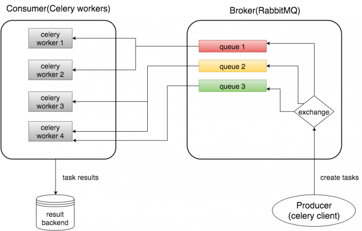
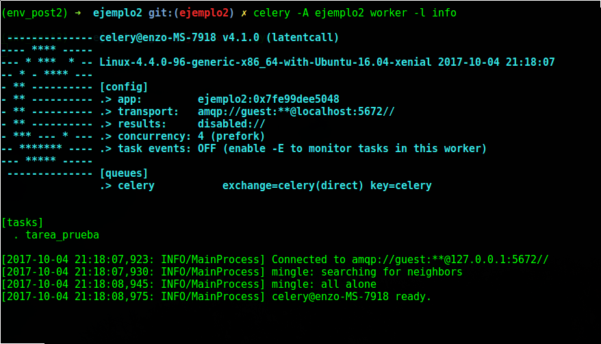
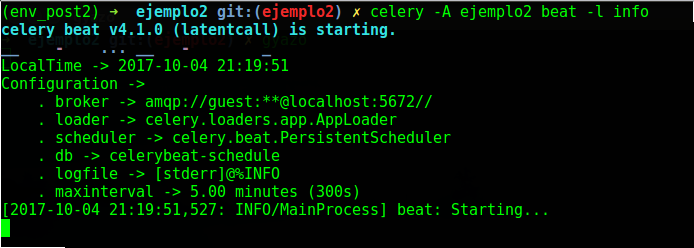
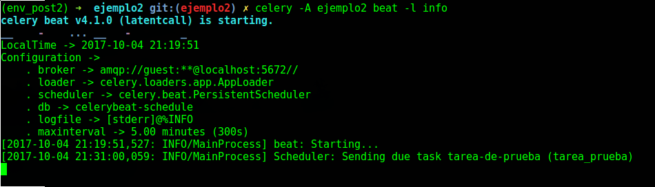
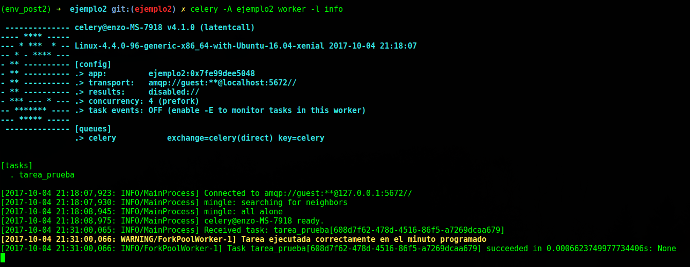

Introducción
Celery es un manejador de colas de tareas, centrada en el procesamiento en tiempo real y que también admite la programación de tareas.
Celery registra las tareas y se las envía al broker, luego el broker registra esas tareas en una o más colas, y entonces cada tarea es recibida por los workers de Celery.
La cantidad de workers puede ser modificada dependiendo de la cantidad de 'cpu' disponibles en la PC.

Nota: Este ejemplo esta desarrollado con Django 1.11.5 y Python 3.5.2
Ingredientes
- celery
- broker (RabbitMQ, Redis, etc)
Preparación
-
Paso 1: Instalación de Celery
pip install celery
En este ejemplo usaremos como broker a RabbitMQ.
Se tienen 2 opciones para tener RabbitMQ a nuestra disposición:
- Directamente instalado en nuestra PC
- En un contenedor de Docker
En este ejemplo usaremos un contenedor de Docker con la imagen de RabbitMQ.
Nota: Se asume que tienes Docker instalado. De lo contrario puedes instalar directamente RabbitMQ en tu PC para continuar con el ejemplo.
docker run -p 5672:5672 --name broker_rabbit -d rabbitmq -
Paso 2: Configuración de Celery en nuestro proyecto.
Creamos el archivo: ejemplo2/celery.py
Dentro de 'celery.py' indicaremos donde se encuentra el archivo 'settings' del proyecto con el que celery trabajará.
Archivo: ejemplo2/__init__.py
Inicializaremos Celery y le diremos el arhivo 'settings' del proyecto que utilizará y la modalidad con la cual reconocerá las tareas.
No olviden cambiar 'ejemplo2' por el nombre de su proyecto...
from __future__ import absolute_import, unicode_literals
import os
from celery import Celery
# set the default Django settings module for the 'celery' program.
os.environ.setdefault('DJANGO_SETTINGS_MODULE', 'ejemplo2.settings')
app = Celery('ejemplo2')
# Using a string here means the worker doesn't have to serialize
# the configuration object to child processes.
# - namespace='CELERY' means all celery-related configuration keys
# should have a `CELERY_` prefix.
app.config_from_object('django.conf:settings', namespace='CELERY')
# Load task modules from all registered Django app configs.
app.autodiscover_tasks()
Crear Archivo: inicio/tasks.pyfrom __future__ import absolute_import, unicode_literals
# This will make sure the app is always imported when
# Django starts so that shared_task will use this app.
from .celery import app as celery_app
__all__ = ['celery_app']Creamos el archivo 'tasks.py' dentro de nuestra aplicación.
Archivo: settings.py
Y dentro del archivo nuestra tarea de prueba el cual solo imprimirá un mensaje.
Es importante saber que cuando queramos importar algo de 'celery', es necesario también importar el 'absolute_import' y 'unicode_literals' de '__future__'.
from __future__ import absolute_import, unicode_literals
from celery import task
@task(name='tarea_prueba')
def tarea_prueba():
print('Tarea ejecutada correctamente en el minuto programado')
Aca definiremos la url del broker que utilizará Celery, en nuestro caso es RabbitMQ con su respectivo usuario, password y puerto.
También le diremos a 'celery' que maneje todo en formato 'json'.
Es importante también definir el timezone, ya que de éste depende que se ejecuten las tareas en el momento necesitado.
Y por último pero no menos importante, el 'BEAT_SCHEDULE' que es la forma en como le decimos a 'celery' que ejecute una tarea determinada en un periodo de tiempo.
Para nuestro ejemplo debemos importar 'crontab' de 'celery' para indicar que queremos ejecutar 'tarea_prueba' en cada minuto 31.
Esto quiere decir que 'tarea_prueba' se ejecutará en cada minuto 31 de cada hora, mientras esté agregado en la configuración de 'BEAT_SCHEDULE'.
También se puede usar 'crontab' para ejecutar una tarea en determinado día, hora, segundo y por supuesto hacer uso de expresiones para casos un poco complejos.
Te recomiendo que vayas a la documentación y veas TODO lo que podrias llegar a hacer con 'crontab' ;)
from __future__ import absolute_import, unicode_literals
from celery.schedules import crontab
CELERY_USER = 'guest'
CELERY_PASSWORD = 'guest'
CELERY_BROKER_URL = 'amqp://%s:%s@localhost:5672//' % (CELERY_USER, CELERY_PASSWORD)
CELERY_ACCEPT_CONTENT = ['application/json']
CELERY_RESULT_SERIALIZER = 'json'
CELERY_TASK_SERIALIZER = 'json'
CELERY_TIMEZONE = 'America/Lima'
CELERY_ENABLE_UTC = True
CELERY_BEAT_SCHEDULE = {
'tarea-de-prueba': {
'task': 'tarea_prueba',
'schedule': crontab(minute=31)
},
} -
PASO OPCIONAL: Gestionar la programación de tareas por medio del administrador de Django
Primero, tenemos que instalar la librería 'django-celery-beat'
pip install django-celery-beatSegundo, agregar 'django_celery_beat' a nuestras 'INSTALLED_APPS' en el settings.py
INSTALLED_APPS = (
...,
'django_celery_beat',
)Tercero, hacer el 'migrate', ya que 'django-celery-beat' registra todo lo referente a las tareas programadas en sus respectivas tablas.
python manage.py migrateSi deseas gestionar tus tareas de esta manera entonces tienes que inicializar Celery Beat especificando el 'scheduler' de 'django-celery-beat' para que Celery lo utilice.
celery -A ejemplo2 beat -l info --scheduler django_celery_beat.schedulers:DatabaseSchedulerDe esta manera ya no es necesario tener el 'CELERY_BEAT_SCHEDULE', ya que puedes programar las tareas desde el administrador de Django.
Por defecto Celery utiliza su propio 'scheduler' y tendrías que inicializarlo como en el paso 3. Así que no hay ningún problema si no deseas utilizar 'django-celery-beat'.
-
Paso 3: Inicializar celery worker y celery beat.
Celery worker
celery -A ejemplo2 worker -l info
La terminal quedaría de esta manera.
Celery beat
celery -A ejemplo2 beat -l info
La terminal quedaría de esta manera.

Resultados
Cuando la hora del servidor pase por el minuto 31. La tarea se ejecutará y el resultado se observará en la pantalla del 'worker' y 'beat'.


Resumen Final
Como vimos en este simple ejemplo. Mediante Celery podemos no solo ejecutar tareas en segundo plano, sino también programarlas para que se ejecuten en periodos determinados o fechas exactas.
Celery es de gran ayuda por ejemplo en casos de cambios de estado en sucesos específicos, envíos de email, realizar backups, etc.
Con este sencillo ejemplo espero haber mostrado lo que podrías llegar a hacer en tus proyectos.
Como siempre dejo el código del ejemplo.
Saludos!